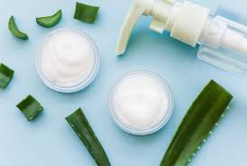

La mejor forma de cuidar la piel es
saber cuales son sus necesidades

Te explicamos cuales son los tipos de piel, como identificar el tuyo, productos para cuidarla y mas


Si quieres saber cual es tu tipo de piel y como puedes cuidarla usando
buenos productos,aqui te damos los mejores tips para tener una piel saludable
Principalmente hay 6 tipos de piel:
Grasa, mixta, seca, sensible, normal y con tendencia al acne.
PIEL GRASA
La piel grasa es una piel que produce un exceso de lipidos. Este desarreglo puede tener su origen en las
variaciones hormonales, o agresiones externas como el estres o la contaminacion. A diferencia de la piel seca,
en este caso las glandulas sebaceas aportan bastantes mas lipidos de los necesarios.
Cuidados
Limpia tu rostro dia y noche, y también antes y despues del ejercicio.
El exceso de grasa tiende a atrapar la suciedad y las bacterias en los poros,
por lo que limpiar la piel y eliminar el maquillaje al final del dia es muy importante.

PIEL MIXTA
La piel mixta se denomina asi porque es una combinacion de dos tipos de piel: normal-seca y grasa o con
impurezas. La piel mixta presenta un aspecto brillante y tiende a desarrollar pequenas impurezas, sobre todo
en la llamada zona T (frente, nariz y barbilla).
Cuidados
El primer paso para cuidar la piel mixta es la higiene facial diaria, esencial para evitar que el sebo
obstruya los poros en la zona T. Hay que elegir un limpiador que ayude a eliminar la grasa, pero sin resecar
la piel. Limpia el rostro dos veces al dia, manana y noche, evitando usar agua caliente.

PIEL SECA
La piel seca puede manifestarse como aspera, escamosa, enrojecida y puede en ocasiones causar dolor. Ocurre
a menudo cuando no hay suficiente aceite y agua en las capas de la piel. Las causas comunes de la piel seca
son deshidratacion, calor, frio o mala alimentacion.
Cuidados
La piel deshidratada tiene sed, y necesita una hidratacion constante, durante todo el dia. Para combatir
la deshidratación se recomienda el uso de cremas que calmen esta sed, con acido hialuronico y otros ingredientes
hidratantes.

PIEL SENSIBLE
Piel sensible es la denominacion de la piel que reacciona irritandose o congestionandose ante la mas pequena
agresion, es decir es una piel predispuesta a reaccionar antes a estimulos externos e internos.
Cuidados
No frotes, ni te laves con una frecuencia excesiva, eso solo irritara la piel sensible y causara una sequedad.
En su lugar, intenta usar limpiadores suaves y delicados, no jabones ni exfoliantes. El maquillaje no esta prohibido,
siempre y cuando elijas cosmeticos que no provoquen irritacion

PIEL NORMAL
La piel normal está bien equilibrada: no es demasiado grasa ni demasiado seca. "Normal" es un termino utilizado
ampliamente para referirse a la piel bien equilibrada. El termino cientifico para la piel sana es eudermica.
Cuidados
En general, se recomienda limpiar la piel 2 veces al dia (manana y noche). Lo importante es que utilices un
producto que se adecue a las necesidades de tu piel en cada momento.

PIEL CON TENDENCIA AL ACNE
El acne se acompana generalmente de poros dilatados y de una piel mas grasa. En un estadio mas avanzado, el rostro
puede presentar papulas (granos rojos), inflamaciones o pustulas (granos blancos). Tambien es preciso saber que el
acne se desarrolla por brotes.
Cuidados
Cuidado diario de la piel. Para evitar que los poros se obstruyan y que la piel se vuelva demasiado grasosa:
Limpie la piel delicadamente con un jabon suave que no cause resequedad. Puede ayudarle usar un producto con acido
salicilico o benzoyl para lavarse si su piel es grasosa y propensa al acne.